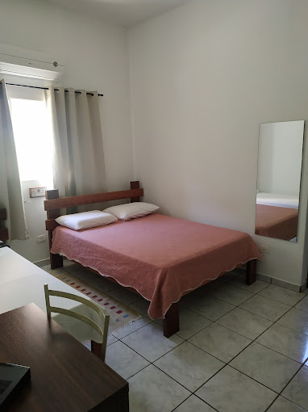

Local selecionado

Pousada Victor
A Pousada Vitor é uma opção aconchegante de hospedagem em Ribeirão Claro, conhecida pelo ambiente
familiar e atendimento acolhedor. Oferece quartos confortáveis, café da manhã caseiro e fácil
acesso aos principais pontos turísticos da região.
R. Cel. Joaquim Ribeiro Gomes, 578/566 - Centro, Ribeirão Claro - PR, 86410-000
Telefone: (43) 99857-5228.